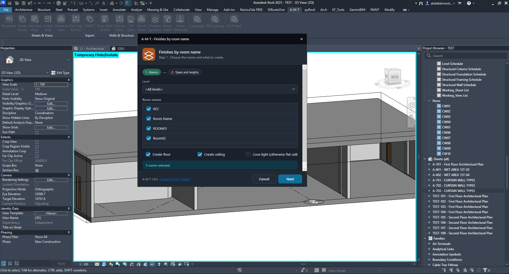
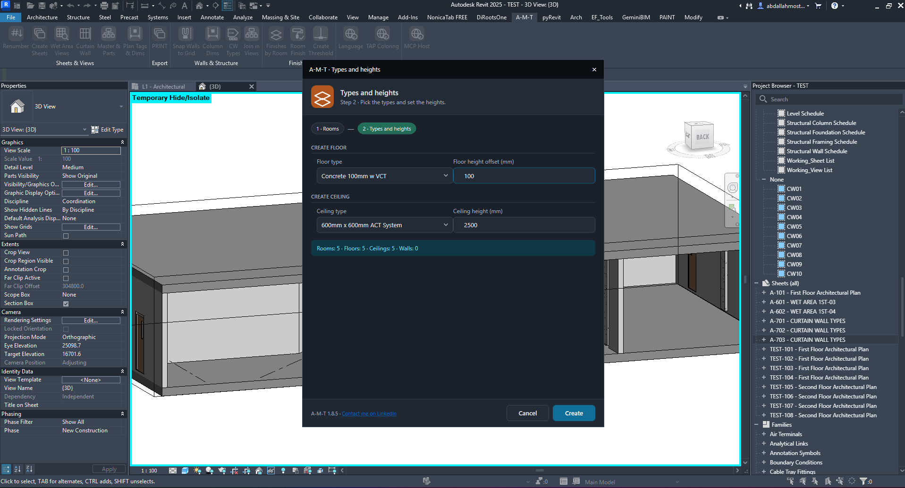
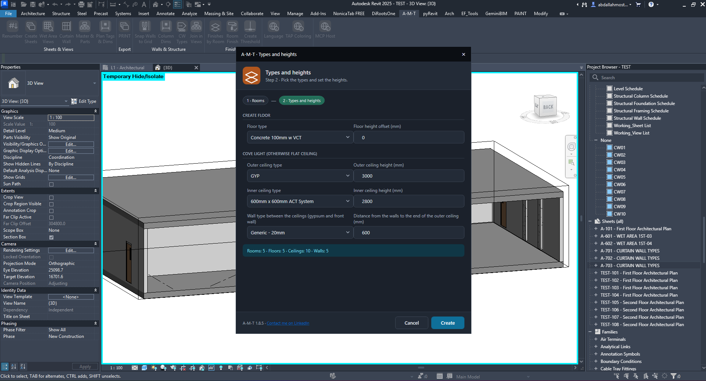
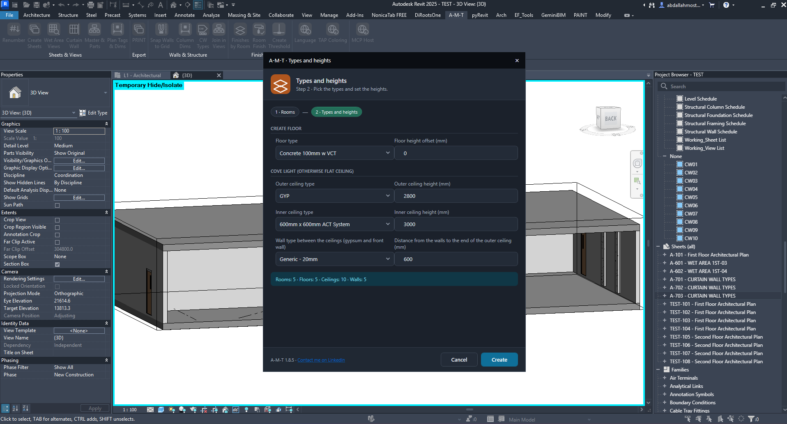
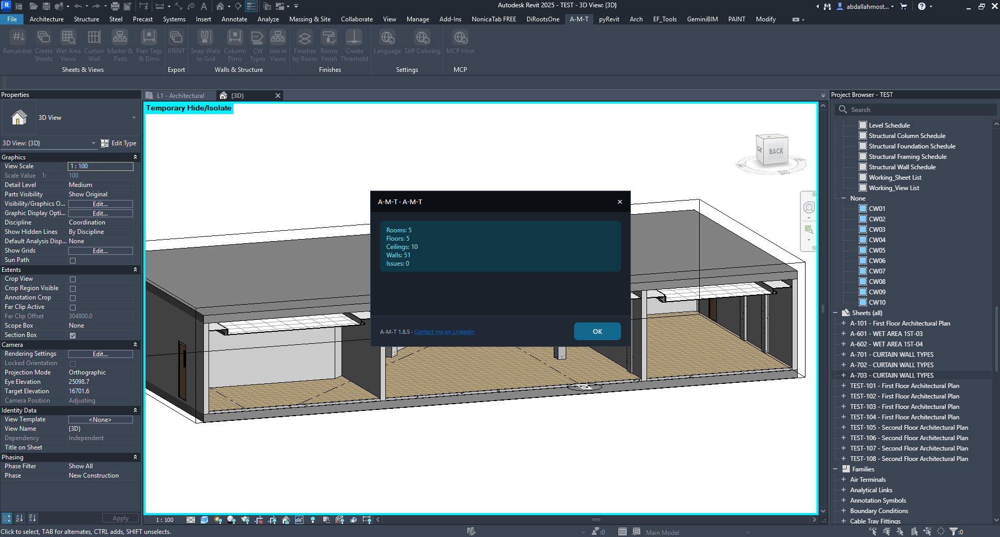
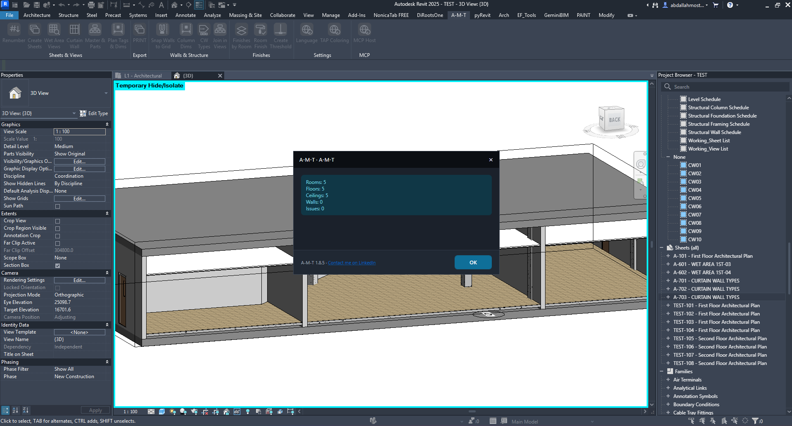
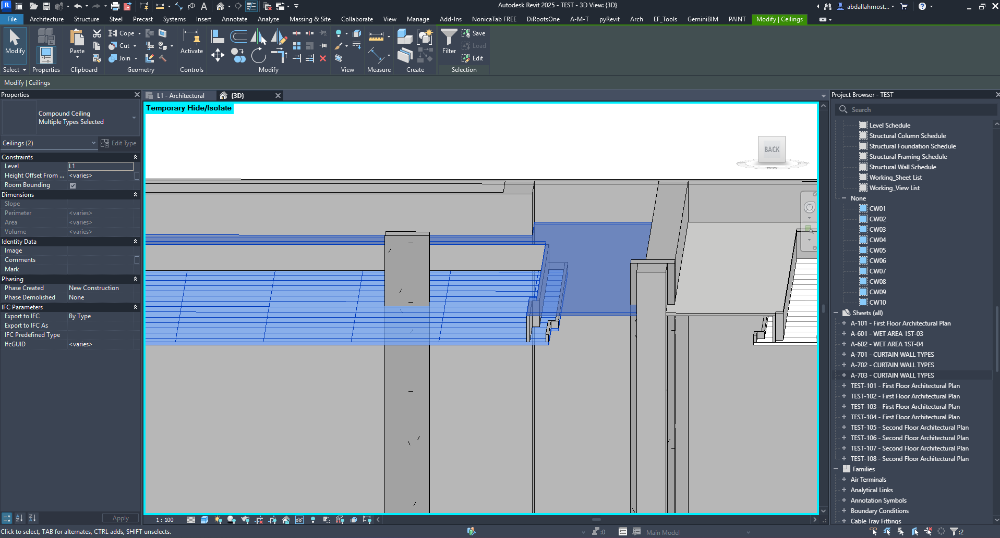
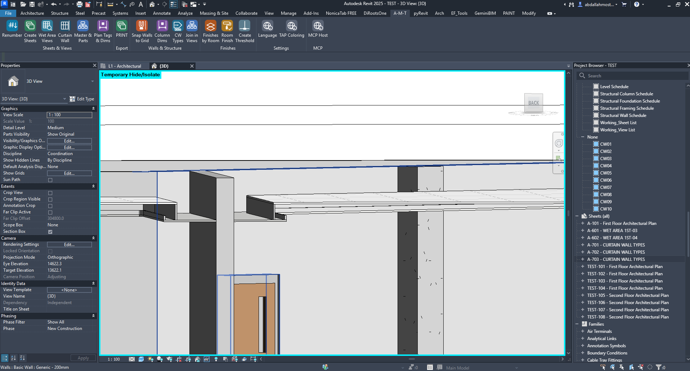

Finishes by Room
Create room-based finish elements in one workflow. Select the rooms, choose floor and ceiling types, define their heights and offsets, and optionally build the cove-ceiling perimeter detail.
How the command works
Two setup stages followed by automatic creation and a completion report.
1. Choose the rooms and elements
Start by defining which rooms will receive finish elements.
Select a level and room names
- Level — choose a specific level or <All levels>.
- Room names — select the room-name entries shown in the list.
- Create floor — enable floor creation for the selected rooms.
- Create ceiling — enable ceiling creation for the selected rooms.

2. Assign floor and ceiling types
Choose the Revit types that will be used for the selected rooms.
Floor configuration
Select the Floor type and set the Floor height offset (mm). The example uses “Concrete 100mm w VCT” with a 100 mm offset.
Ceiling configuration
Choose the Ceiling type and enter the ceiling height in millimetres. The example shows a 600 mm × 600 mm ACT system.
The dialog summarizes the expected number of floors, ceilings and walls before creation.

3. Configure the cove ceiling detail
When the cove-light ceiling arrangement is required, define the outer and inner ceiling components.
Outer and inner ceilings
- Outer ceiling type — select the perimeter/outer ceiling type.
- Inner ceiling type — select the central/inner ceiling type.
- Outer ceiling height (mm) — set the outer ceiling elevation.
- Inner ceiling height (mm) — set the inner ceiling elevation.
- Distance from the walls to the end of the outer ceiling (mm) — controls the perimeter offset.
- Wall type between the ceilings — choose the wall type used to form the vertical edge between the two ceiling zones.

Review the configured values
Before creating, check that the selected ceiling types and height values match the intended ceiling arrangement. The preview summary shows the expected counts for rooms, floors, ceilings and walls.

4. Create the finish elements
Run the command and review the completion report.
Creation summary
The completion dialog reports the number of rooms processed and the number of floors, ceilings and walls created, along with any issues.
The illustrated run reports 5 rooms, 5 floors, 10 ceilings, 5 walls and 0 issues.

5. Verify the result in Revit
Inspect the created geometry and confirm the finish elements are assigned to the intended rooms.
Check the 3D result
Review the floor finish surfaces, ceiling zones and any cove perimeter walls in the model. The example shows the generated finish elements in the 3D view.

Inspect the model elements
Select the created ceiling or floor elements to inspect their Revit properties and confirm their placement and type.

Review the completed model
Orbit or zoom around the room to check the finished ceiling and wall details, especially where the inner and outer ceiling zones meet.

Watch Finishes by Room in Action
See the complete room selection, type setup and creation workflow inside Autodesk Revit.
Before you run the command
- Confirm that the rooms and their level assignments are correct.
- Select the required room names and enable floor and/or ceiling creation.
- Choose the correct floor and ceiling types from the project.
- Enter all height and offset values in millimetres.
- If using the cove ceiling arrangement, verify both ceiling types, both heights, perimeter distance and connecting wall type.
- Review the expected element counts, click Create and check the completion report.